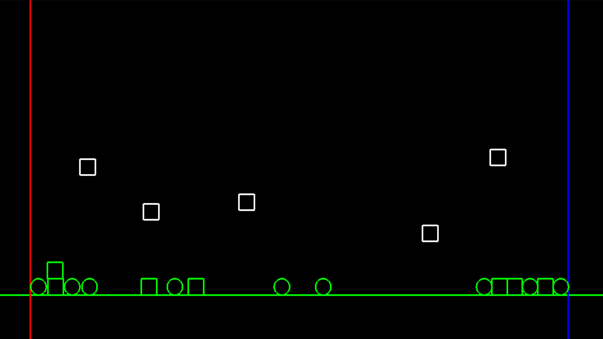
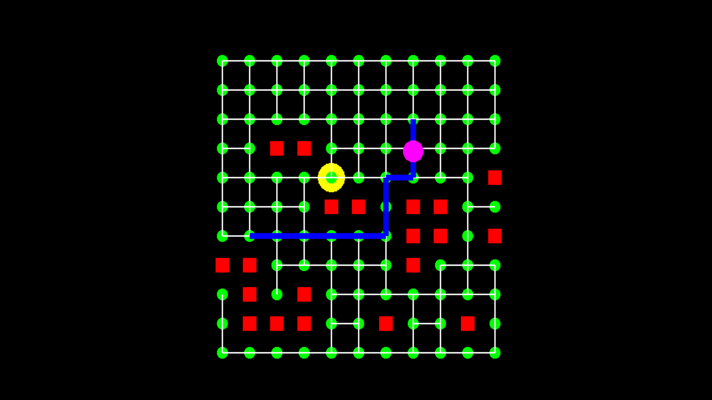
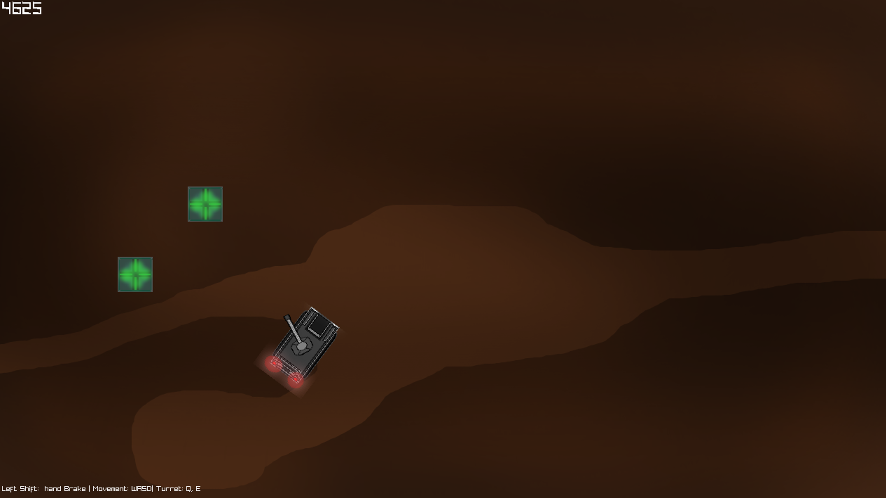

For our other half of the 2nd year Graphics unit we were required to create a 3D renderer in C++ using OpenGL, it has to have model loading & texture loading. This project was a bit tough at first since I had never used or been exsposed to graphics programming before. It was a good thing to learn but it took me some time to grasp the concept on how it all fit together, I managed to get 3D models to load into the scene & was also able to get normal & specular maps to work with real time lighting.
The process to make this renderer was a hard & long one but eventually I got there in the end & wouldnt mind trying to make the renderer a little more advanced than it is now. I enjoyed the end of making this project & I am happy with the results I got.
Mushroom Hat Model by Dylan Smith.
This custom 2D Physics Engine was apart of our Physics unit for 2nd year at AIE. We were required to make a physic engines that supported plane, box & circle collision as well as Kinematic bodys & Rigidbodys. In this screenshot you can see green boxes & circles & white boxes, the green objects represent the rigidodys & the white boxes represent the Kinematic bodies. The project was a little tricky but I soon got the hang of it & manage to get a decent working Physics Simulation, of course its not perfect but its a great attempt!
The rigidodys collide again planes & have gravity & mass that can be tweaked to create large & heavy objects. I also manage to make it to the user can create objects during run time to play around with the simulation to make it more Interactive.
This custom pathfind AI was for an AI unit in the 1st year of AIE, we were required to make a path find AI using the dijkstra algorithm. The AI in this project is a pink ball that travels along the green paths (Nodes) & when it gets hungry for food (Yellow Circle) it finds a safe path to it. The AI avoids walls (Red blocks) & uses a state machine to determine if its hungry or not, the assigningpath is also shown in the screenshot as the blue line.
The project was a very stressful one for me because around that time I was still very new to C++ & didn't quite understand it yet. With a bit of guidence from my teachers I was able to push through & even learnt some new things about C++!
Looking back now I think I could easily remake the project in better ways now that I am more experienced & more comfortable using C++. I am very happy with how this turned out.
For this assessment in 1st year at AIE we had to make our own Math Library & use it to create a tank game. The Math Library can't really be shown from the screenshot but it has vector 2,3,4 as well as Matrices, Colour conversion & other functions like Lerp & Slerp were added as well to be used in the project. The tank game project took about 6 weeks & back then I was a little confused with some aspects of the Math that was used but now I think I could make a new Library to use hopefully someday in my own projects.